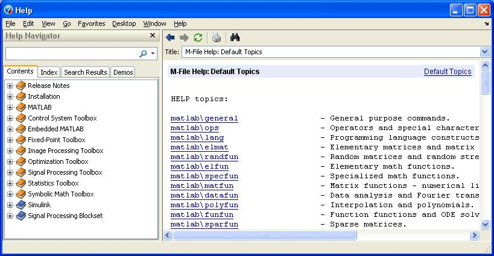

Useful Tips
Contents
MATLAB help function
The help command brings up a basic list of features about the function or script you are interested in. For example:
help sin
SIN Sine of argument in radians.
SIN(X) is the sine of the elements of X.
See also ASIN, SIND.
Overloaded methods:
codistributed/sin
sym/sin
Reference page in Help browser
doc sin
If you don't really know what is the name of the function you are looking for, you can just type help -- it will bring up a huge list of topics and you can just click on the topic links that you think is helpful.
MATLAB help window
Or, if you prefer the more conventional graphical interface, you can click on the characteristic blue box Help, or type
helpwin
to bring up Matlabs help and demo window. You can then search for terms in the "Help Navigator" panel.
the semicolon operator
In default, MATLAB prints the outcome of each command typed in the command line, like the following:
x = 1
x =
1
Sometimes, the commands generate a huge list of numbers (think about a vector with 100 elements!) and mess up the command window. The semicolon operator (;) can be used to suppress command-line echo:
x = 1;
repeat commands
You can repeat a command without retyping it by using the up arrow on your keyboard.